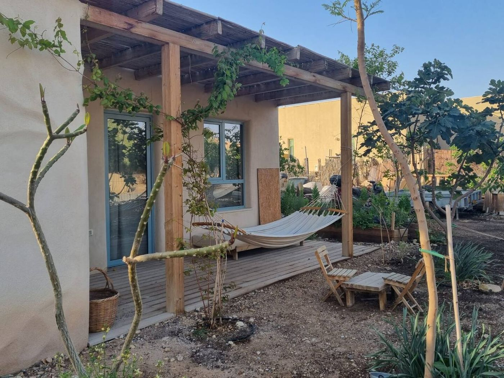

הבית הגדול
עד 11 אורחים4 חדרים2 מקלחות★ 5.0
- בריכה פרטית בעונה החמה
- טאבון, מנגל גדול ופינת מדורה
- דק עם פרגולה, פינג־פונג ודשא
- מטבח של משפחה שאוהבת לבשל
- משחקי קופסה ופינת עבודה
יש טאבון לפיצה!
פנוי בתאריכים שבהם אנחנו בחופשה. המחיר והתאריכים הפנויים מתעדכנים באיירבנב.